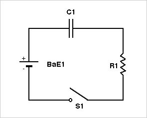

RC CIRCUIT: CHARGING
In the circuit shown below the switch S1 is closed at t = 0 and it is assumed
that the initial charge on the capacitor is zero. The charge, q, on
the capacitor at time t is given by
q = Vb*C1*(1 - exp(-t/(R1*C1)))
where Vb is the battery voltage. Note the use of parentheses in the
exponent to clearly establish that the product (R1*C1) is in the denominator
of the exponent. Also note, when t >> R1*C1, q = Vb*C1.
Under the conditions stated above, the current through resistor R1 at time
t is given by
I = (Vb/R1)*exp(-t/(R1*C1))
If one desires to find the time required for the charge on the capacitor
to build up to some percent of its value for very long times, Vb*C1, one
can let
q = (fraction)*(Vb*C1)
where "fraction" is a number between 0 and 1 to represent some percent of
the final value of charge for very long charging times. For example,
for charging to 30% of Vb*C1, "fraction"=0.3.
